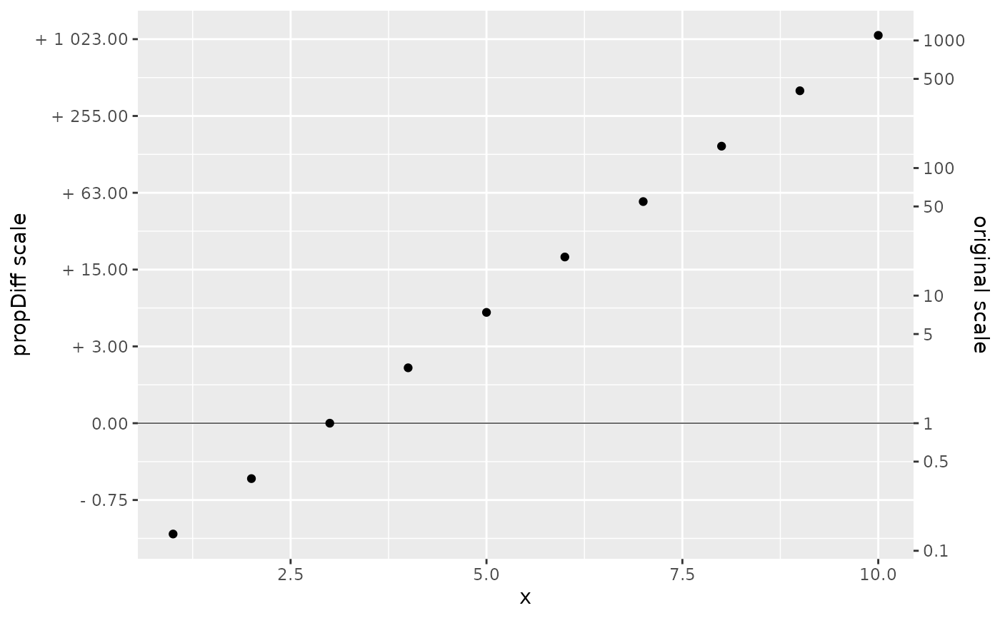

Natural log transformation... showing proportional change explicitly
propDiff_trans.RdNatural log transformation... showing proportional change explicitly
Usage
propDiff_trans(n = 7, base = exp(1), ...)See also
Other transformations:
divMult_trans(),
nel_trans()
Examples
dat<-data.frame(x = 1:10, y = exp(-2:7))
dat %>% ggplot2::ggplot(ggplot2::aes(x, y)) +
ggplot2::geom_point() +
ggplot2::scale_y_continuous(
transform = propDiff_trans(base = 2)
, sec.axis = ggplot2::sec_axis(
labels = function(x) {x}
, transform = ~.
, breaks = c(0.1, 0.5, 1, 5, 10, 50, 100, 500, 1000)
, name = "original scale"
)
) +
ggplot2::labs(y = "propDiff scale") +
ggplot2::geom_hline(yintercept = 1, linewidth = 0.2)

dat %>% ggplot2::ggplot(ggplot2::aes(x, exp(seq(-1, 0.8, 0.2)))) +
ggplot2::geom_point() +
ggplot2::scale_y_continuous(
transform = propDiff_trans()
, sec.axis = ggplot2::sec_axis(
labels = function(x) {x}
, transform = ~.
, breaks = c(0.25, 0.5, 0.75, 1, 1.25, 1.5, 1.75, 2)
, name = "original scale"
)
) +
ggplot2::labs(y = "propDiff scale") +
ggplot2::geom_hline(yintercept = 1, linewidth = 0.2)